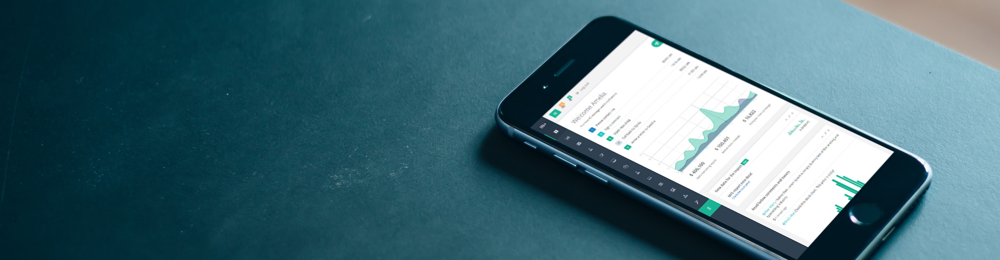
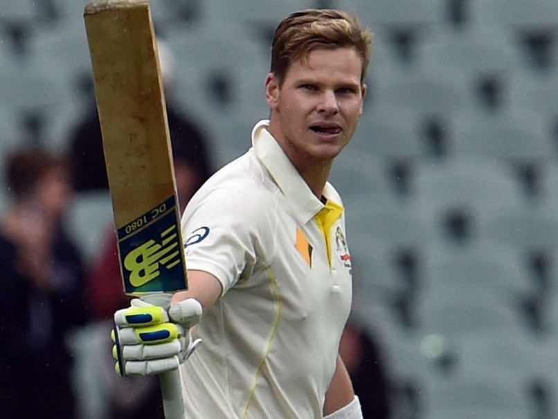

University Kho-Kho
Represented the university twice, with runner-up and winning finishes across the competitive journey.
Sports & teamwork
University Kho-Kho and South Zone Handball taught me the things solo practice cannot: read momentum, communicate early, recover from the lost point, and keep executing together.

Represented the university twice, with runner-up and winning finishes across the competitive journey.
Part of the winning South Zone campaign that earned qualification for the national tournament at IIS Jaipur.
School and university competition built respect for preparation, fitness, role clarity, and collective execution.
Performance starts before the event—with repetition, fitness, a clear plan, and honest practice.
Read what others need, communicate before the breakdown, and value the shared result over individual attention.
The lost point is information. Reset, adjust, and stay available for the next play.

Competitive by nature. Collaborative by practice.
That combination is as valuable in an incident room or design review as it is on the field.
See how preparation, role clarity, and resilience shape my approach to engineering teams.